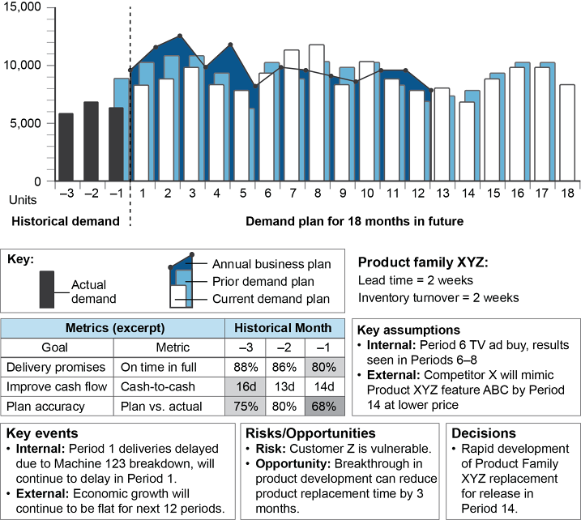
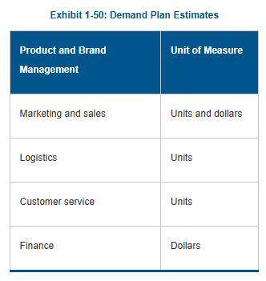
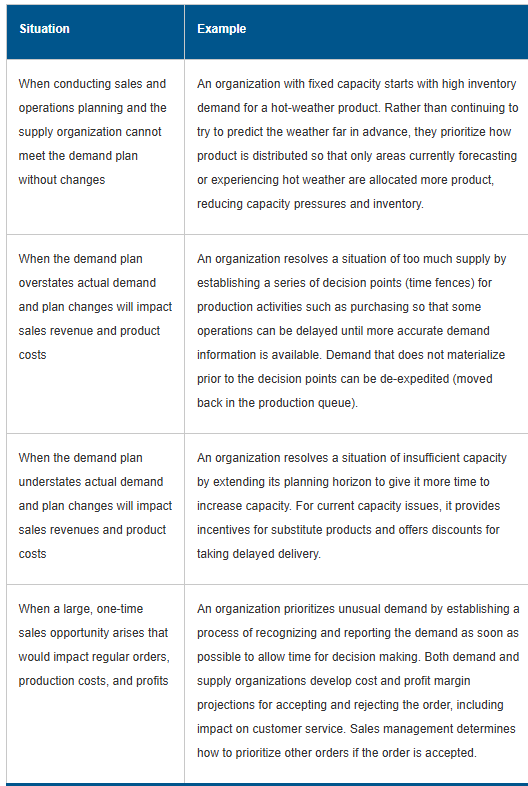

S&OP Definition & Process
Sales and Operations Planning (S&OP): a process to develop tactical plans that provide management the ability to strategically direct its businesses to achieve competitive advantage on a continuous basis by integrating customer-focused marketing plans for new and existing products with the management of the supply chain.
- Performed at least once a month, reviewed at aggregate (product family) level.
- Links the strategic plan to execution; reviews performance vs. plan.
- S&OP = both the plan (the document) and the process (the monthly meetings).

Exhibit 1-48: S&OP Process and Meetings
S&OP Meetings
Five core meetings, run sequentially each month:
- 1. Data gathering / Product review: update new products, product changes; gather cleansed demand history and statistical forecast.
- 2. Demand planning meeting: review forecast with marketing/sales at product family level; reach consensus demand plan. Chaired by VP Sales or Marketing.
- 3. Supply review meeting: constrain demand plan based on capacity. Options: produce ahead of demand, add capacity (overtime, outsource), or reduce demand plan.
- 4. Pre-S&OP meeting: representatives from all prior steps + finance review options and escalate unresolved issues to executive meeting.
- 5. Executive S&OP meeting: CEO + VP Sales/Marketing + VP Operations approve a single consensus plan. All functions work from the same numbers.

Exhibit 1-49: Example of a Demand Plan Dashboard (18-month, units)
S&OP Benefits & Demand-Side Inputs
- Links business planning to tactics; enables proactive decisions.
- Definitive short- to medium-term plan; unifies all functions.
- Bridge between customer value and supply chain efficiency.
- Incentive for continuous improvement (monthly review cadence).
Demand-side contributions: time-phased demand forecasts, demand plan commitments and assumptions, market analysis.

Exhibit 1-50: Demand Plan Estimates
Operations Strategies: Level, Chase & Hybrid
Level Production Method: a production planning method that maintains a stable production rate while varying inventory levels to meet demand.
Chase Production Method: a production planning method that maintains a stable inventory level while varying production to meet demand.
- Level: constant output rate; inventory absorbs demand fluctuations. Good for stable workforces; can build excess inventory in slow periods.
- Chase: matches output to demand each period; minimal inventory but requires flexible capacity (hiring, overtime, layoffs).
- Hybrid: plant runs near full capacity part of the year; ramps down in slow periods. Balances inventory and capacity costs.
Supply-Demand Strategies: MTS, MTO, ETO, ATO
Make-to-Stock (MTS): a production environment where products can be and usually are finished before receipt of a customer order. Customer orders are filled from existing inventory. Used when demand is stable and products turn over quickly.
Make-to-Order (MTO): a production environment where a good or service can be made after receipt of a customer’s order. The final product is usually a combination of standard items and custom-designed items.
Engineer-to-Order (ETO): products whose customer specifications require unique engineering design, significant customization, or new purchased materials. Each customer order results in a unique set of part numbers, bills of material, and routings.
Assemble-to-Order (ATO): a production environment where a good or service can be assembled after receipt of a customer’s order. The key components used in assembly are planned and stocked in anticipation of the customer order.
- MTS = lowest customization, highest volume, shortest lead time to customer.
- ATO = standard components, custom assembly. Requires skilled labor for final assembly.
- MTO = many end items, custom design. Longer lead time.
- ETO = highest customization, unique BOM and routing per customer. Longest lead time.
Demand Management & Prioritization
- When supply is constrained, demand must be prioritized — not all customers/orders can be fulfilled equally.
- Tools: time fences, customer segmentation, allocation, collaborative planning with supply chain partners.
- Policy must define who can change priorities and under what circumstances.
- Process: set time fences collaboratively; delay commitments to the last possible moment; use actual capacity/inventory data to make fair decisions.

Exhibit 1-51: Situations Requiring Managing and Prioritizing Demand
- Customer service strategy: fill rates, lead time monitoring, order status monitoring. Key question — does the cost of a higher service level justify the benefit?
TERM / CONCEPT
ASCM def: Sales and Operations Planning (S&OP)
ANSWER
A process to develop tactical plans that provide management the ability to strategically direct its businesses to achieve competitive advantage on a continuous basis by integrating customer-focused marketing plans with management of the supply chain.
Click card to flip · Use arrows or shuffle to practise
Question 1
Question 2
Question 3
Question 4
Question 5